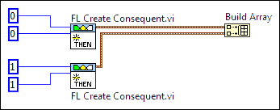

|
Note��Unlike the FL Create Antecedent VI, the FL Create Consequent VI does not have a condition input. The FL Create Consequent VI always returns the consequent corresponding to the degree of membership of the output variable within the membership function. |
